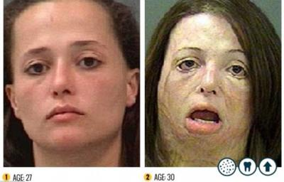

비교 사진 1
이 영역에는 첫 번째 비교 사진에 대한 설명을 넣으시면 됩니다. 예를 들어 피부 변화, 표정 변화, 체형 변화 등 관찰 포인트를 정리할 수 있습니다.
이 영역에는 첫 번째 비교 사진에 대한 설명을 넣으시면 됩니다. 예를 들어 피부 변화, 표정 변화, 체형 변화 등 관찰 포인트를 정리할 수 있습니다.

이 영역에는 두 번째 비교 사진 설명을 넣으시면 됩니다. 약물 사용 전후의 시각적 차이, 건강 악화 양상, 경고 메시지 등을 정리하기 좋습니다.
이 영역에는 세 번째 비교 사진 설명을 넣으시면 됩니다. 발표용이라면 핵심 변화만 짧고 강하게 쓰는 것이 가장 효과적입니다.